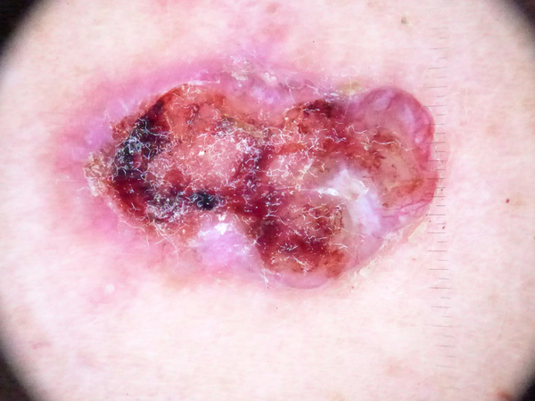

สถานะการออกแบบ
นี่เป็นต้นแบบ (Prototype)
วัตถุประสงค์
เว็บแอปนี้ใช้เทคโนโลยีการมองเห็นด้วยคอมพิวเตอร์ (Computer Vision) เพื่อตรวจหา 3 การวินิจฉัยที่เป็นไปได้มากที่สุดสำหรับแผลที่ผิวหนัง (Skin Lesion) แอปเวอร์ชันขั้นสูงสามารถใช้ในการตรวจหาโรคมะเร็งผิวหนังในระยะแรกได้
ประเภทของรอยโรค (Lesion Types)
คำอธิบายต่อไปนี้นำมาจาก งานวิจัยนี้:
nv
ไฝธรรมดา (Melanocytic nevi):
ไฝธรรมดาเกิดจากการเจริญเติบโตผิดปกติของเซลล์เมลาโนไซต์ ซึ่งเป็นเซลล์ที่ผลิตเม็ดสีผิว (เมลานิน)
มีลักษณะหลากหลายตั้งแต่สีอ่อนจนถึงสีเข้ม มักมีลักษณะผิวขรุขระหรือเรียบ
ส่วนใหญ่เป็นลักษณะปกติและไม่มีอันตราย อย่างไรก็ตาม การเปลี่ยนแปลงในขนาด สี หรือรูปร่าง
อาจเป็นสัญญาณของการเกิดโรคอื่นที่ต้องได้รับการตรวจสอบเพิ่มเติม

mel
มะเร็งเมลาโนมา (Melanoma):
เป็นมะเร็งผิวหนังที่มีต้นกำเนิดจากเซลล์เมลาโนไซต์ โดยมักพบในบริเวณที่สัมผัสแสงแดดบ่อย
ลักษณะของเมลาโนมาอาจคล้ายกับไฝธรรมดา แต่ขอบเขตจะไม่ชัดเจน
สีไม่สม่ำเสมอ และอาจเปลี่ยนแปลงในขนาดหรือรูปร่างอย่างรวดเร็ว
หากตรวจพบในระยะแรกสามารถรักษาได้โดยการผ่าตัด
bkl
กลุ่มรอยโรคเคราโทซิส (Benign Keratosis):
เกิดจากการสะสมของเซลล์ผิวหนังที่สัมผัสแสงแดดเป็นเวลานาน
ลักษณะของรอยโรคอาจเป็นผิวสะเก็ดหรือขรุขระ ส่วนใหญ่มักไม่พัฒนาไปเป็นมะเร็ง
แต่ควรเฝ้าสังเกตการเปลี่ยนแปลง
bcc
มะเร็งเซลล์ฐาน (Basal Cell Carcinoma):
มะเร็งผิวหนังชนิดนี้เกิดจากเซลล์ชั้นฐานของผิวหนัง มักพบในผู้สูงอายุและผู้ที่สัมผัสแสงแดดเป็นประจำ
ถึงแม้จะไม่แพร่กระจายไปยังอวัยวะอื่น แต่สามารถเติบโตและทำลายเนื้อเยื่อรอบข้างได้
การรักษาโดยทั่วไปคือการผ่าตัด

akiec
แผลอักเสบจากแสงแดด (Actinic Keratoses):
เป็นภาวะผิวหนังที่เกิดจากการสัมผัสแสงแดดเป็นเวลานาน
ลักษณะของแผลมักเป็นสะเก็ดหรือพื้นผิวขรุขระ อาจมีสีแดงหรือสีคล้ำ
หากปล่อยไว้โดยไม่รักษา อาจพัฒนาไปสู่มะเร็งผิวหนังได้

vasc
รอยโรคหลอดเลือด (Vascular Lesions):
เป็นกลุ่มรอยโรคที่เกี่ยวข้องกับระบบหลอดเลือด เช่น ห้อเลือดหรือรอยโรคหลอดเลือดแดง-ดำ
มีลักษณะเป็นจุดแดงหรือคล้ำ มักไม่เป็นอันตราย แต่ในบางกรณีอาจต้องได้รับการตรวจสอบเพิ่มเติม
df
เนื้องอกชนิดไม่ร้ายแรง (Dermatofibroma):
เกิดจากการตอบสนองของเนื้อเยื่อที่บาดเจ็บ โดยมักพบเป็นก้อนเนื้อเล็กๆ
ที่มีสีคล้ำหรือสีเทา ผิวมักเรียบและไม่เจ็บปวด รอยโรคชนิดนี้ไม่พัฒนาเป็นมะเร็ง
รูปแบบของภาพที่รองรับ
แอปรองรับรูปภาพในรูปแบบ jpg และ png
คำถามที่พบบ่อย (FAQ)
ฉันต้องรอโหลดโมเดลทุกครั้งที่ใช้แอปหรือไม่?
ไม่ เมื่อโมเดลดาวน์โหลดแล้ว จะถูกเก็บไว้ในหน่วยความจำ
เรื่องความปลอดภัยของข้อมูลผู้ป่วย?
ภาพที่คุณส่งจะไม่ถูกส่งไปยังเซิร์ฟเวอร์ภายนอก